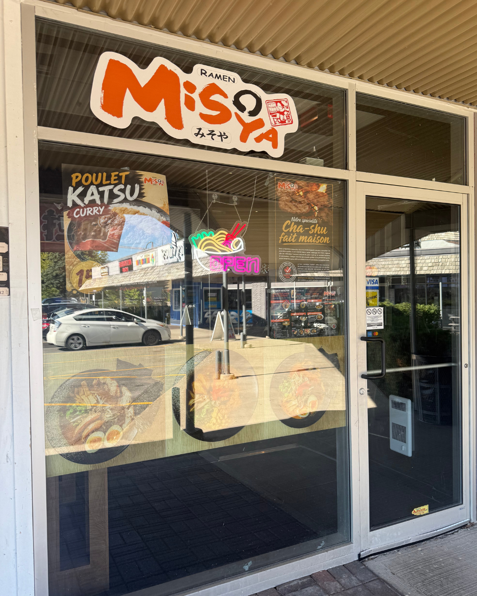
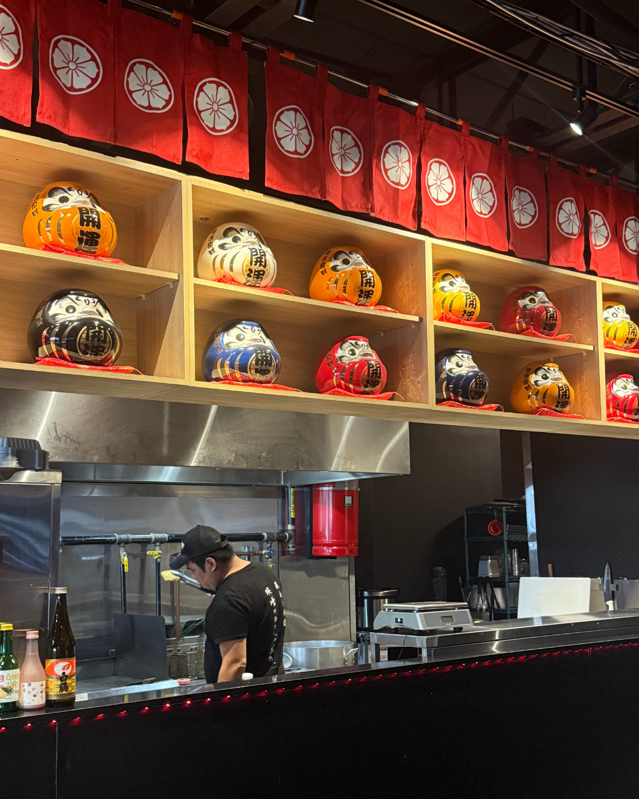
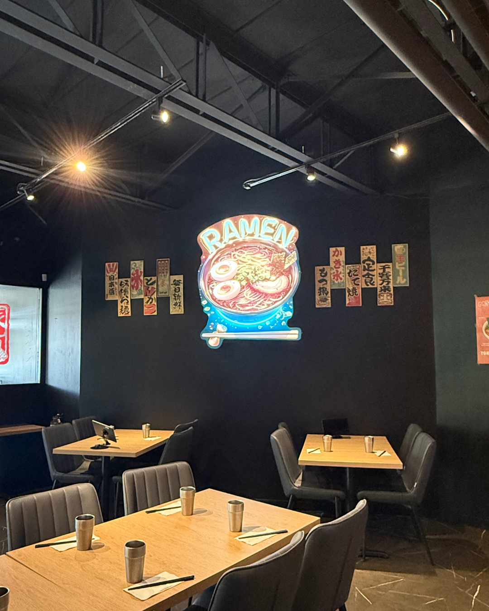
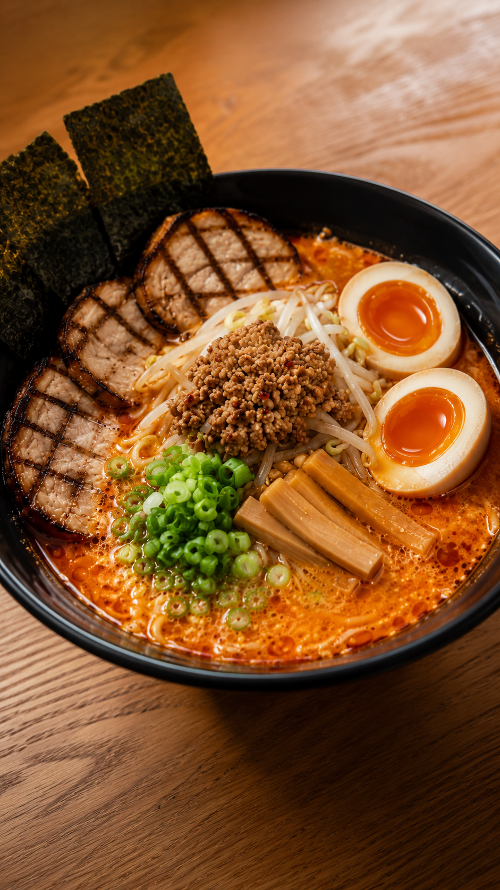
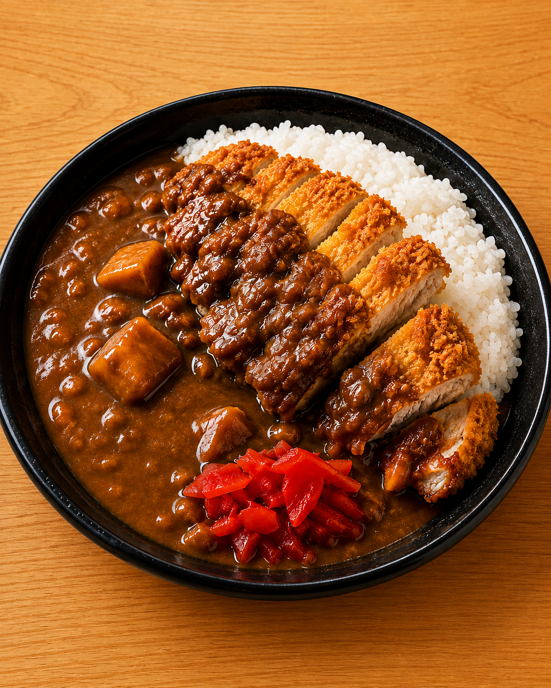

🔐 Offre secrète #1
34 $
28 $
+ taxes
- 1 ramen au choix
- 1 salade sunomono
- 1 boisson gazeuse
- 1 karaage au poulet ou au porc
Derrière chaque bol de ramen, il y a une histoire. Et un secret réservé à la communauté RestoEnLigne vous attend à la fin… 👀
De plongeur à Anjou à chef de ramen certifié au Japon, Derik Ma a parcouru un long chemin pour partager sa passion du ramen. Et Lucky a caché quelque chose pour vous chez Ramen Misoya Ouest-de-l’Île.


Né en Chine, Derik arrive au Canada à 14 ans. Comme beaucoup de nouveaux arrivants, il apprend vite, travaille fort et construit son parcours un quart de travail à la fois.
Son premier emploi étudiant? Plongeur dans un restaurant à Anjou. Ce n’était pas glamour, mais c’est devenu sa première vraie école : le rythme du service, la pression d’une cuisine occupée et la discipline nécessaire pour faire fonctionner un restaurant.
Vers 28 ans, Derik ouvre son premier restaurant. Après 18 mois, il doit fermer. Mais pour lui, ce chapitre n’est pas simplement un échec : il lui apprend ce qu’aucune salle de classe ne pouvait lui enseigner sur la restauration.
Des années plus tard, Derik reconstruit son parcours à travers la restauration japonaise. Il ne veut pas exploiter une franchise de l’extérieur : il veut comprendre le métier derrière le bol.
Il part donc au Japon pour trois semaines de formation intensive et revient à Montréal avec une nouvelle compréhension du ramen — du bouillon aux nouilles, jusqu’aux détails qui font la différence à chaque service.



Aujourd’hui, chez Ramen Misoya Ouest-de-l’Île, cette expérience se retrouve dans les détails. Le miso et les nouilles sont importés directement du Japon. Les bouillons, les viandes et la préparation quotidienne sont faits sur place, avec soin, pour créer un bol riche, profond et authentique.
Pour plusieurs Montréalais, Misoya apporte aussi une dose de nostalgie : certains anciens étudiants qui fréquentaient la première adresse montréalaise reviennent aujourd’hui dans l’Ouest-de-l’Île… avec leurs enfants.



Du 10 au 20 septembre 2026 • exclusivement chez Ramen Misoya Ouest-de-l’Île • pour la communauté RestoEnLigne.
Lucky est le Shiba Inu de Derik. Pour cette collaboration, il devient l’indice qui vous mène de l’histoire… jusqu’au restaurant. Déverrouillez le mot de passe ci-dessous, puis présentez-le sur place.
Remplissez le formulaire et nous vous enverrons le mot de passe secret par courriel. Aucune réservation requise, aucune limite quotidienne, et plusieurs clients peuvent profiter de l’offre.